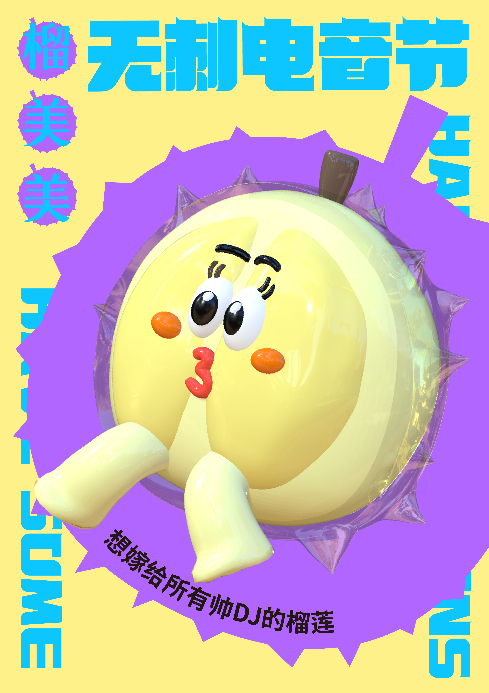
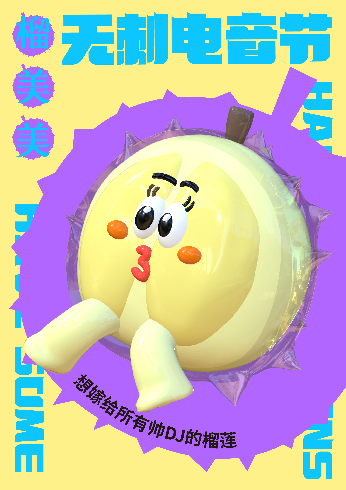

No Thorn*
Motive
The project is presented in the form of an exhibition, with the starting point of thinking about how to recreate the pure self under the disguise in the fast-paced era. Eight fruits with different personalities are chosen and given character colors, showing the emotional changes of each fruit between thorny and non-thorny, and hoping that the audience will think about whether they all have the same sharp "protective shell" as the thorns on the surface of the fruit. "The eight fruits include

 

UI interface
This app is produced for the collection of NFT in the No Thorn. In the No Thorn, we created a virtual space. There are currently 8 NFT images with different personalities, and they change between thorns and thorns looking at our expression. We hope to create an brand that allows consumers to buy these NFT images with the No Thorn coins obtained at the No Thorn electric festival. The app has three main functions, one is to display all NFTs, and the other is to click to see the story of each NFT. Consumers can find their microcosm in these NFT stories. Third, consumers will have to Unlock the NFT purchased by the dog in their own window. The way to unlock it is to pull out the thorn.